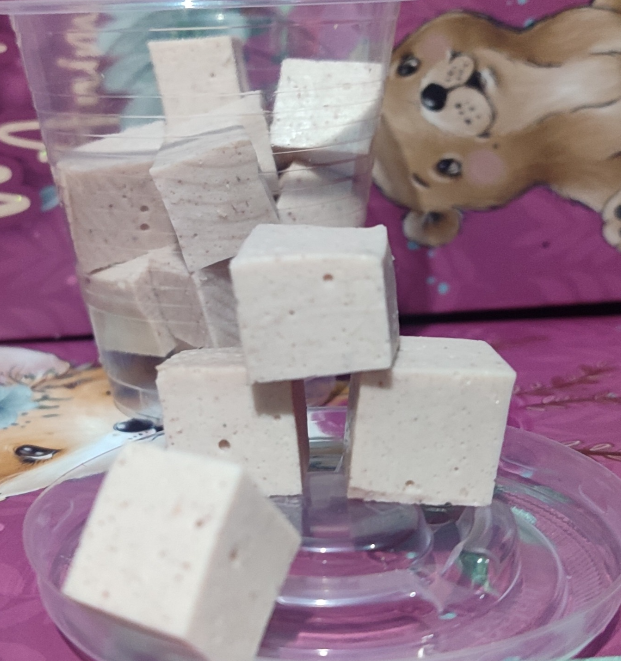

Línea Mascotas
Nutrición Funcional para Perros y Gatos de Todas las Edades
Salud Articular y Pelaje Brillante
Nuestra línea para mascotas está elaborada con colágeno 100% natural libre de condimentos, sal añadida, ajo o cebolla. Presentado en prácticos cubitos dosificados ideales para enriquecer su comida habitual o como premio saludable.

Protección de Articulaciones
Previene y ayuda en el tratamiento de la displasia de cadera, artritis y problemas de movilidad en perros y gatos de edad avanzada o razas grandes.
Pelaje Brillo y Piel Sana
Nutre los folículos capilares reduciendo la caída excesiva de pelo y mejorando notablemente el brillo y la suave textura de su manto.
Salud Digestiva e Inmunológica
Protege y regenera la mucosa intestinal, mejorando la absorción de nutrientes y fortaleciendo sus defensas naturales de forma digestiva.
Guía de Dosificación Diaria
Mascotas Pequeñas / Gatos (< 10 kg): 1 a 2 cubitos diarios mezclados con su comida o como premio directo.
Mascotas Medianas (10 kg - 25 kg): 2 a 3 cubitos diarios.
Mascotas Grandes (> 25 kg): 3 a 5 cubitos diarios.
Nota: Servir frío o a temperatura ambiente. Mantener refrigerado.